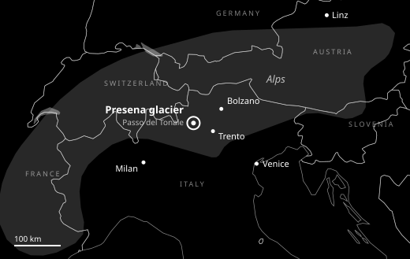

Do glaciers breathe?
Maintained ice, Presena 2008–2026. What have nearly twenty summers of covers left on the Presena glacier, and how far does that match what the operator, the Province and the studies say? Who maintains a public glacier, who pays, and who decides?
22 · Luca · started 2026-11-02 · updated 2026-11-23
Every element carries its kind: Documented in a study or record, Claimed (operator) by the operator, Reported by others, Observed in an image, Calculated by this sketch, Reanalysed weather, Synthetic placeholders and projections, Cartographic base maps, Not known. The explorable stack of summers is on explore.html.
Where, who, why

The Presena glacier lies between about 2,700 and 3,000 m above Passo del Tonale, in the municipality of Vermiglio (Trentino), on the border with Lombardy. Lifts reached it in 1963 and summer skiing began in 1966–67; in 1987 the municipality bought the lifts. As the glacier shrank, from 82 ha in 1961 to 26 ha in 2011, the summer season ended earlier and rock began to break through the ski run. In 2008 the Province approved an experimental programme with the lift company and two universities: every summer since, white geotextile has been laid on the run to slow its melt (in 2010, from 28 June to 14 September).2,9 The operator says the covered area grew to 110,000 m² and that the work costs up to €350,000 a year, partly paid by the Province.1 This sketch asks what nearly twenty summers of covers have left on the ice, how far the figures hold, and who maintains a public glacier.
Eleven breaths
Seen from Sentinel-2, the covered run fills in every June and July and empties every September: the fleece appears as the snow melts off it, and disappears when the sheets are taken up. One curve per summer, 2016–2026.
Event
How large is the covered area, summer by summer? Four kinds of source answer, and they do not agree.
DocumentedCovers did not start in 2008: white geotextiles were already laid on the right-hand side of the glacier at the end of the 1990s, after straw mulching and moved or artificial snow, to keep the ski lifts to Passo Presena running.2
Not known2012, 2013 and 2015: no covered area in any source (2012 has a materials test). Before 2016 there is no outline of the covers, only areas; the satellite count starts in 2016.
Simulate
The satellite sees the cover
On 14 August 2021, Sentinel-2 shows a bright strip along the ski run. In visible light fleece and clean ice look alike; in shortwave infrared they do not: ice absorbs it, the fleece reflects it.
| Surface | Visible (green) | Shortwave infrared (1.6 µm) |
|---|---|---|
| Fleece | 46–54% | 37–47% |
| Clean ice | 51–55% | 3–4% |
ObservedSentinel-2 top-of-atmosphere reflectance, scene 20210814T102031_T32TPS, two small areas per surface, one date.8
CalculatedThe standard cloud mask (s2cloudless) mistakes the fleece for cloud. On that clear day it finds 0.26% cloud on a 300 m ring around the run, and 11.1% on the run itself. A filter that trusts the mask throws away the very scenes that show the cover; this sketch judges cloud on the ring instead.8
How much does a cover save?
One summer of melt on three surfaces, with the albedos measured on Presena: the bare glacier, new fleece and reused fleece.
The plinth: what twenty summers could have kept
Ice under a cover melts less than the ice beside it, so the covered run should rise above its surroundings, summer after summer, like a plinth. How tall could it be by now? Move the year.
Situate
Who maintains the glacier
The covering began as an experimental programme approved by the Province, with a convention between the Province and the lift company, and conventions with the Universities of Milan and Trento.2 Who owns the lifts today, what share the Province pays, and who has supplied the fabric since 2012 are not documented.
ReportedAbout 34 t of fabric are laid on the mountain each year and 17 t burned each year in Bolzano.10 Calculated100,000 m² × 340 g/m² = 34 t, consistent with the reported weight.
Narrate
- The cover is visible from orbit in every summer from 2016 to 2026, and the standard cloud mask mistakes it for cloud.
- Documented covers grew from 28,000 m² in 2008 to 76,400 m² in 2010; for 2016–2026 the satellite gives a range, and the operator's figures sit inside it in 2016 and above it in 2017, 2019, 2020 and 2021.
- One summer under the cover left a step of about 1.5–2 m in 2010; about 34 t of plastic are laid each year and 17 t burned, according to Betti and Fleck (2021).
Statements by others, and how far they hold: ….
The claims ledger
Sources and limits
- Consorzio Pontedilegno–Tonale, “The protection of Presena glacier”, read 3–4 November 2026. pontedilegnotonale.com. The operator's own statements (Claimed).
- Diolaiuti G., Senese A., Mosconi B., D'Agata C., Mihalcea C., Smiraglia C. (University of Milan), Trenti A. (Province of Trento), “Effetti delle misure di protezione glaciale attiva sul bilancio energetico puntuale del Ghiacciaio Presena”, AINEVA Neve e Valanghe 74. aineva.it (full text). Field measurement, cover areas 2008–2011, glacier areas 1961–2011.
- Senese et al. 2020, Cold Regions Science and Technology, doi:10.1016/j.coldregions.2020.103007. air.unimi.it. Field measurement.
- AINEVA, Neve e Valanghe 80, 2012 materials test. aineva.it.
- Oerlemans et al. 2017, MortAlive feasibility study. ideas.repec.org.
- Huss et al., EGU 2022, doi:10.5194/egusphere-egu22-1808. meetingorganizer.copernicus.org.
- Enhanced temperature-index model after Pellicciotti et al. 2005, Journal of Glaciology 51(175); factors to verify, see data/parameters.json.
- Sentinel-2 Level-1C, ESA / Copernicus, via Google Earth Engine (COPERNICUS/S2_HARMONIZED). Copernicus licence. Script
tools/gee_presena_v3_6.js, snapshot code.earthengine.google.com, run 23 November 2026. Derived values: calculated, preliminary, not validated against independent images. - PhD thesis, Università degli Studi di Milano, January 2013 (R08686), on active glacier protection at Presena; author to confirm. Copy consulted 23 November 2026.
- Betti G., Fleck K., “La montagna invisibile / The invisible mountain”, 2021, written with materials from the operator. theinvisiblemountain.com. Photos not reproduced.
- Data: years.json, area_s2.json, observations_s2.json, qa.csv (visual check), claims.json, actors.json, parameters.json, weather_summers.json (ERA5 via Open-Meteo, CC BY 4.0, 28 June–14 September 2008–2026, fetched 2026-11-23); catalogue DATA_CATALOG.md. Raw Earth Engine exports are archived with SHA-256 checksums.
- Method of the satellite count. One late-summer scene per year (19 July–28 August, chosen by cloud on a ring, shadow and fresh snow on the run). Fleece fraction by linear unmixing of five surfaces. Lowest = pixels at least 75% fleece; highest = every pixel at least 15% fleece; best = sum of fractions; all inside a zone where fleece appears in at least 30% of fairly clear scenes 2016–2026 (130,587 m²). Fleece outside the zone is reported as an error measure; part of it is real fleece just past the zone edge.
- Visual check. Each yearly scene was checked by eye (qa.csv). 2018 (fresh snow), 2020, 2021 and 2024 (residual snow) did not pass and are drawn in grey.
- What this sketch cannot establish: the true covered area in any year (visible area is not fabric area: sheets can lie under snow, in shadow or outside the zone), the money, the permits, the ownership, or any effect downstream.